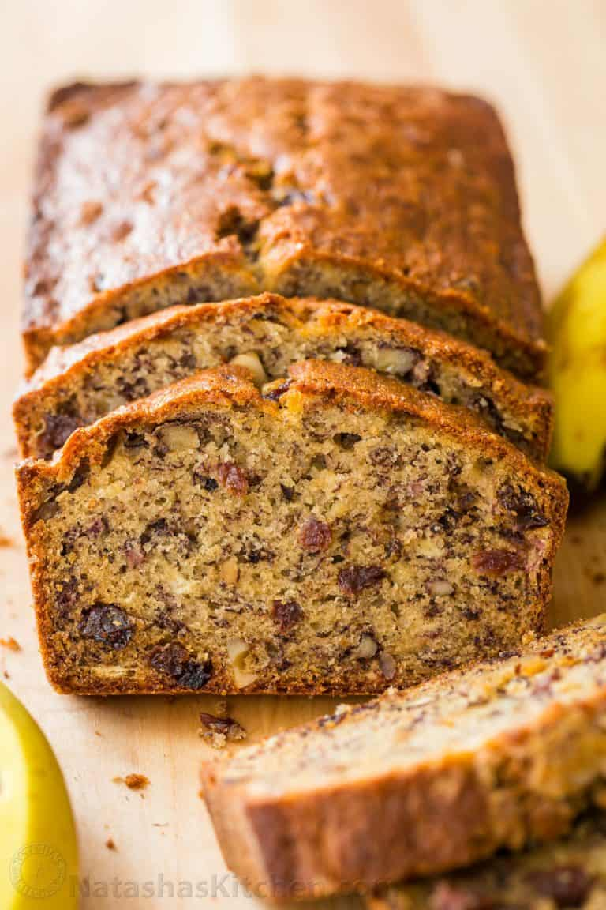

Banana Bread

Description
This easy and moist bana bread recipe is loaded with bananas, choclate chips, and toasted walnuts!
Ingredients
- 3 very ripe bananas
- 1/2 cup unsalted butter
- 3/4 cup granulated sugar
- 2 large eggs
- 1 1/2 cups all-purpose flower
- 1 tsp baking soda
- 1/2 tsp salt
- 1/2 tsp vanilla extract
- 1 cup choclate chips
- 1/2 cup walnuts
Steps
- Preheat the oven to 350°F. Grease and flour a bread loaf pan. Lightly roast walnuts on a skillet.
- In a mixing bowl, cream together 8 Tbsp softened butter and 3/4 cup sugar.
- Mash bananas with a fork until the consistency of chunky applesauce and add them to the batter along with 2 eggs, mixing until blended.
- In a separate bowl, whisk together: 1 1/2 cups of flour, 1 tsp of baking soda and 1/2 tsp of salt then add to batter.
- Add 1/2 tsp of vanilla extract and mix in chopped walnuts and raisins. Pour into prepared loaf pan. Bake at 350˚F for 55-60 min or until a toothpick inserted into the center comes out clean. Let banana bread rest for 10 min.